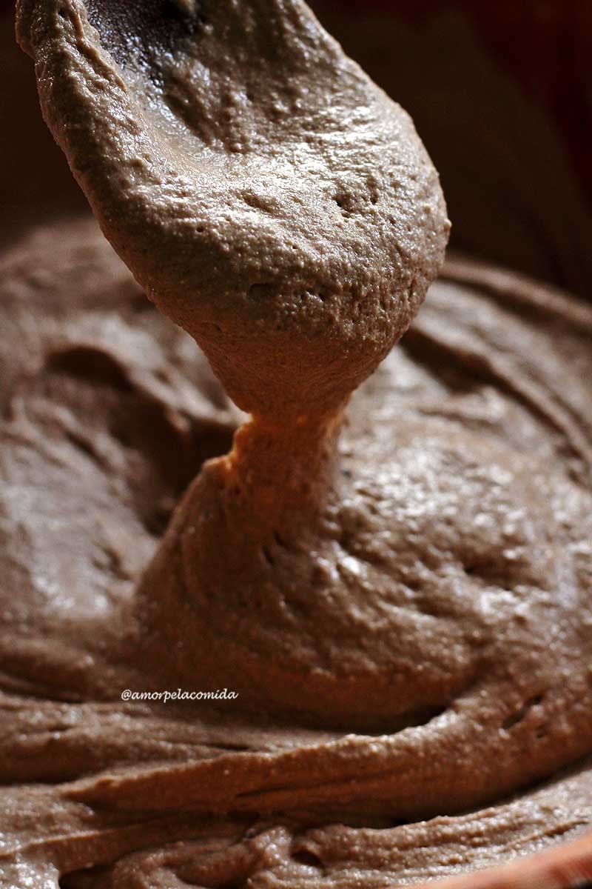

1 xícara de farinha de arroz integral (130 gramas)
1/2 xícara de farinha de quinoa (53 gramas)
1/2 xícara de farinha de trigo sarraceno (66 gramas)
1 xícara de polvilho doce (120 gramas)
1 colher de sopa de cacau em pó (8 gramas – opcional)
1 colher de chá de sal (5 gramas)
1/2 colher de chá de goma xantana (meça usando a colher de medida nivelada)
1/2 colher de sopa de fermento biológico seco instantâneo (6 gramas)
1/4 de colher de chá de bicarbonato de sódio (1 grama)
1 colher de sopa de melado (20 gramas)
1 colher de sopa de azeite (15 ml)
1 1/2 xícara de água morna (360 ml)
2 colheres de sopa de sementes de abóbora (24 gramas – opcional)
2 colheres de sopa de sementes de girassol (24 gramas – opcional)
1 colher de sopa de nozes picadas (12 gramas – opcional)
3 damascos picadinhos (25 gramas – opcional)
Em uma bacia adicione todos os ingredientes secos, peneirando o bicarbonato de sódio e o cacau em pó para evitar grumos. Misture bem formando um mix de farinhas sem glúten.
Faça uma cavidade no centro das farinhas e adicione o melado, o azeite e a água morna aos poucos, mexendo sempre com a colher de pau.
Conforme a massa for ficando pesada para mexer adicione mais água, lembre-se sempre de limpar bem as laterais da bacia.
Depois de adicionar toda água a massa deve ser grossa, uniforme e elástica.
Textura da massa

Separe 1 colher de sopa de sementes de abóbora e 1 colher de sopa de sementes de girassol para decorar o pão. Adicione os ingredientes opcionais na massa.
Transfira a massa para uma forma silicone de 22 cm de comprimento, 8 cm de largura e 6 cm de profundidade. Se não usar uma forma de silicone você deve untar com óleo e polvilhar farinha de arroz para o pão não grudar.
Deixe a massa crescer em um local que não bata vento até dobrar de volume, aproximadamente 1 hora. Eu gosto de colocar no micro-ondas desligado com 1 xícara de água fervida, assim vira uma estufa caseira.
Quando o pão estiver quase chegando no topo da forma você deve preaquecer o forno a 180º C, pois o pão precisa entrar no forno aquecido.
Quando o pão integral caseiro fofinho alcançar o topo da forma leve-o para assar em forno aquecido 180º C por aproximadamente 25 – 30 minutos.
Assim que você conseguir encostar na forma sem se queimar retire o pão de dentro e deixe esfriar sobre uma grade ou prato forrado com papel toalha.
, se você cortar o pão quente você vai estragar a textura da fatia.
- Se você substituir as farinhas desta receita você precisará fazer ajustes na massa, por isso só recomendo se você já for experiente em pães sem glúten.
- O bicarbonato de sódio serve para deixar o pão mais escuro e um pouco mais crescido, você pode substituir por 1/2 colher de chá de fermento em pó.
- Substitua o melado por mel, agave ou qualquer outro açúcar, mas não pode ser adoçante.
- Substitua o azeite por qualquer gordura da sua preferência.
https://youtu.be/Qh-aZf57dAc
Fat: 4,2 gramas
Calories: 160 calories
Saturated Fat: 0,6 gramas
Unsaturated Fat: 1,6 gramas
Sodium: 8%
Fiber: 10%
Cholesterol: 0%
Carbohydrate: 9%
Sugar: 2,3 gramas
Serving Size: 14 fatias
Trans Fat: 0%
Protein: 7%